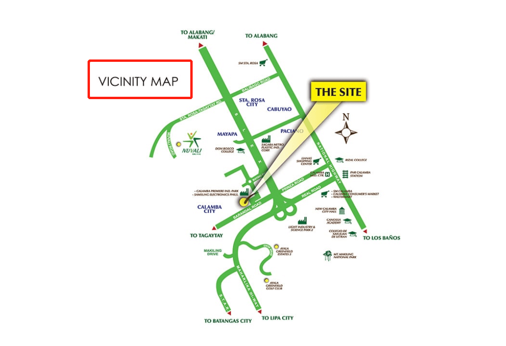
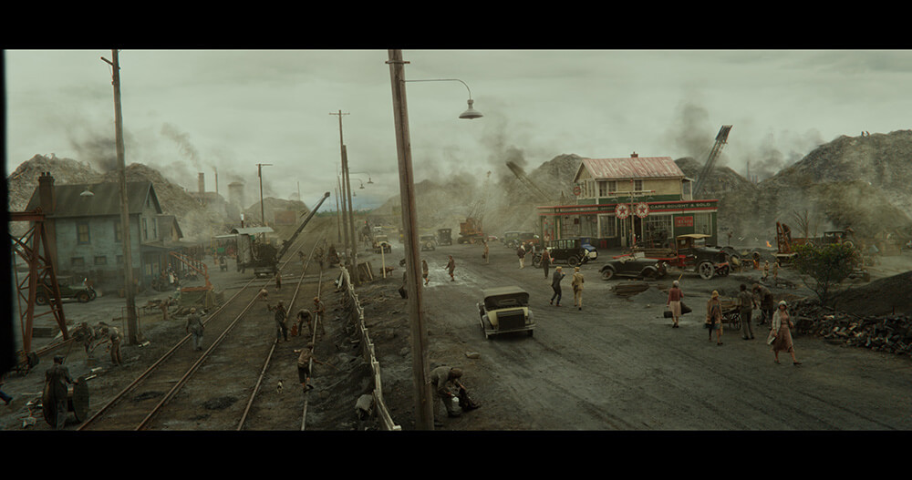
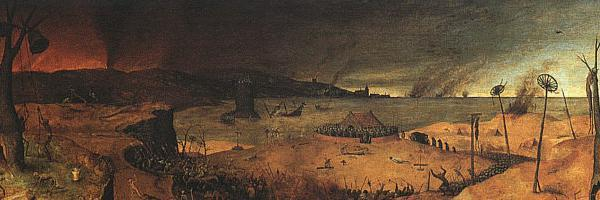

chapter2.1--handout
Background Information
Drawbridge(吊桥，开合桥)
原文：The valley of ashes is bounded on one side by a small foul river, and, when the drawbridge is up to let barges through...
灰烬谷一边有条肮脏的小河流过，每逢河上吊桥拉起让驳船通过...
现代的开合桥（a type of movable bridge）主要建在有江河的地方，其桥梁上部结构可以根据需要而进行移动，以利于河中过往船舶通过。目前世界上最大跨度的开合桥是美国“西西雅图开合桥”，而中国国内拥有最多开合桥的城市要属天津。
在中世纪，开合桥常见于城堡的入口处，也属于城堡的一种防御建筑物。因为城堡通常盖在乡村间的一些战略位置，如山路、河口，或是利用地形上的优势盖在悬崖、峭壁上或山丘等地，所以也为吊桥的建造提供了可能。比如下面这一种↓
木质的吊桥甲板一段和门楼的边缘固定相接，当把吊桥收起来的时候，不仅可以阻断入侵者前进同时甲板也能作为门楼的另一道防御。（A typical arrangement would have the drawbridge immediately outside a gatehouse, consisting of a wooden deck with one edge hinged or pivoting at the gatehouse threshold, so that in the raised position the bridge would be flush against the gate, forming an additional barrier to entry.）
Crêpe De Chine(双绉裙)
Myrtle第一次出现的时候穿着一条双绉裙（crêpe-de-chine）：Her face, above a spotted dress of dark blue crêpe-de-chine...
crêpe-de-chine是法文词（翻译成英语是crepe of china），但它其实是首先从“双绉”翻译过去的。crêpe就是指“绉纱”（a light crinkled fabric woven of any of various fibers），而crêpe-de-chine特指以丝绸为原料做的绉纱织物。
这种织物在织造时纬线以两根左拈线和两根右拈线依次交替织入，织物组织为平纹，这种织物又称双纡绉。经精练整理后，织物表面起绉，有微凹凸和波曲状的鳞形皱纹，光泽柔和，手感柔软，穿着舒适，抗皱性能良好。
Vocabulary
bound
💧vt. 以……为界 （to form the edge or limit of an area）
n. 界限；跃起（edge; a high or long jump）
💧原文：The valley of ashes is bounded on one side by a small foul river...
灰烬谷一边有条肮脏的小河流过…
💧bound 在这里作动词就是“以…为界/邻”，后面的介词可以用on或者是 by.
💧bound 也经常作为名词使用，比如一个很高级的表达：by leaps and bounds, bounds在这里表示“跳跃 ”，这个短语就是用来形容“突飞猛进，飞速发展”。比如：
I have to say Internet is developing by leaps and bounds.
我得承认因特网的发展是突飞猛进的。
vicinity
💧n. 附近地区；附近，邻近（the area around a particular place）
💧原文：A white ashen dust veiled his dark suit and his pale hair as it veiled everything in the vicinity — except his wife, who moved close to Tom.
一层灰白色的尘土笼罩着他深色的衣服和浅色的头发，笼罩着前后左右的一切——除了她的妻子之外。她走到了汤姆身边。
💧我们先来做个brainstorm, 表示“附近，周围”有哪些单词或短语呢？我们首先能想到的比如near, around, next to, close to, nearby等等。但在正式写作当中，这些词的分量似乎都太轻了。
💧今天出现的这个句子当中就有一个可以瞬间提高档次的表达——in the vicinity (of). 比如：
There is no hospital in the immediate vicinity.
附近没有医院。

💧n. 附近地区；附近，邻近（the area around a particular place）
💧原文：A white ashen dust veiled his dark suit and his pale hair as it veiled everything in the vicinity — except his wife, who moved close to Tom.
一层灰白色的尘土笼罩着他深色的衣服和浅色的头发，笼罩着前后左右的一切——除了她的妻子之外。她走到了汤姆身边。
💧我们先来做个brainstorm, 表示“附近，周围”有哪些单词或短语呢？我们首先能想到的比如near, around, next to, close to, nearby等等。但在正式写作当中，这些词的分量似乎都太轻了。
💧今天出现的这个句子当中就有一个可以瞬间提高档次的表达——in the vicinity (of). 比如：
There is no hospital in the immediate vicinity.
附近没有医院。
Crush Your Problems
- Occasionally / a line of gray cars / crawls along an invisible track, / gives out a ghastly creak, / and comes to rest, / and immediately / the ash-gray men swarm up with leaden spades / and stir up an impenetrable cloud, / which screens their obscure operations / from your sight.
有时一列灰色的货车慢慢沿着一条看不见的轨道爬行，叽嘎一声鬼叫，停了下来，马上那些灰蒙蒙的人就拖着铁铲一窝蜂拥上来，扬起一片尘土，让你看不到他们隐秘的活动。
💧表达精讲
①crawl along... “沿着…缓慢行进”，crawl本义是指“（昆虫）爬行”，这里用来形容货车行使，可以体会一下它和move的区别哦~
②come to rest “停下”（rest在这里作名词），come to表示“达到某种状态”（arrive at a particular state）. 还有一个同样意思但非常漂亮的表达：grind to a halt “慢慢停下来”（to go slower gradually and then stop completely）. 比如：
Production ground to a halt during the strike.
罢工期间生产渐渐陷入瘫痪。
③screen...from... “遮掩，庇护”，这里screen的动词含义是从名词的“屏障，保护”引申而来的，还可以替换为shield.
- Evidently / some wild wag of an oculist / set them there / to fatten his practice / in the borough of Queens, / and then sank down himself into eternal blindness, / or forgot them / and moved away.
显然是一个异想天开的眼科医生把它们坚在那儿的，为了招揽生意，扩大他在皇后区的业务，到后来大概他自己也永远闭上了眼睛，再不然就是撇下它们搬走了。
💧表达精讲
①some wild wag of an oculist 相当于an oculist that was like some wild wag. wild表示“异想天开的（with unusual ideas）”；wag常见作动词，表示“（狗）摇尾巴”，比如：The dog wagged its tail. 这里wag作为名词比较罕见，指“幽默滑稽的（amusing in an unusual way）人”。
这么形容是因为作者认为把一个看起来非常怪异的广告牌立在这片蛮荒之地很古怪滑稽（bizarre and funny）.
②fatten his practice, fatten本义是指“使……长膘，增肥”，这里引申为“为……牟利，使发财”；practice多半指“医生或律师的操业，工作”；所以fatten his practice就可以理解为“招揽生意赚钱”。 - The only building in sight / was a small block of yellow brick / sitting on the edge of the waste land, / a sort of compact Main Street ministering to it, / and contiguous to absolutely nothing.
眼前唯一的建筑物是一小排黄砖房子，坐落在这片荒原的边缘，大概是供应本地居民生活必需品的一条小型"主街"，左右隔壁一无所有。
💧句式拆解
这个句子的理解难点在于宾语a small block of yellow brick后面有三个后置修饰成分：
①sitting on the edge of the waste land 是现在分词短语作yellow brick的后置定语；
②a sort of compact Main Street ministering to it 则是现在分词短语作伴随状语（it是指the waste land哦~）；
③contiguous to absolutely nothing 是形容词短语作后置定语。
💧表达精讲
①minister to “照料，服侍；满足…的需求”（to give aid or service），相当于tend to. minister常见于作名词表示“（政府的）部长，大臣；（基督教的）牧师”。（一个记忆的小诀窍：这些职业的本质都是“为他人服务的”，所以就不难理解minister的动词含义啦~）
②contiguous to 相当于我们前面讲的in proximity to或adjacent to. 这里为大家拓展一个词缀：-tig=to touch（接触），这个词根还可以变形为-tag, contagion “传染”, 表达相同意思的词根还有：-tact,contact.
 - Her face, above a spotted dress of dark blue crepe-de-chine, contained no facet or gleam of beauty, but there was an immediately perceptible vitality about her as if the nerves of her body were continually smouldering.
她穿了一件有油渍的深蓝双绉连衣裙，她的脸庞没有一丝一毫的美，但是她有一种显而易见的活力，仿佛她浑身的神经都在不停地燃烧。
💧句式拆解
①above a spotted dress...是插入语；
②as if the nerves of her body were...是虚拟语气，因为“神经燃烧”明显是不符合事实的，所以这里是夸张的表达。
💧表达精讲
①gleam of “一丝丝的”，相当于glint of, small amount of.
②an immediately perceptible vitality “显而易见的/马上能察觉的活力”（vigor or liveliness that can be perceived or notice at once）.
这里再拓展一下类似perceive(v.)-perception(n.)-perceptible(adj.)的变形方式，表示“欺骗”：deceive(v.)-deception(n.)-deceptive(adj.)
注意deceptive表示“具有欺骗性的”（misleading）.
③as if the nerves of her body were continually smouldering, smoulder本义指“ (有烟、无火焰地)闷烧，阴燃 ”，还可以引申为“性感迷人”（If you say someone smoulers, you mean that person is sexually attractive, usually in a mysterious or very intense way.）
- Tom deferred that much to the sensibilities of those East Eggers who might be on the train.
汤姆做了这一点让步，以免引起可能在这趟车上的那些东卵人的反感。
💧句式拆解
这个句子的主体结构是Tom deferred to the sensibilities of...
💧表达精讲
①that much表示“一定程度的”（to a certain degree）, 比如：I don't have that much money on me just now. 现在我身边没那么多钱。
②defer to表示“迁就于，遵从”（ to submit to another's wishes, opinion）, 比如：We will defer to whatever the committee decides. 我们遵从委员会作出的任何决定。
③sensibilities表示“ （易受伤害或影响的）感情 ”，这里显然是为了调侃，因为那些人并不是真的“容易受到伤害”，而是摆出一种非常矫揉造作的姿态（以道德高尚自居而“不忍直视”他人有半点不检点的地方）。如果用feelings就失去这种讽刺效果了~
Content Analysis
💧Clue 1: The Valley of Ashes — where the forgotton and the hopeless belong.
灰谷坐落在西卵到纽约市中心曼哈顿的铁路中段旁，它并不是真的在指“灰烬堆成的山谷”，而是因为看起来灰蒙蒙的烟雾弥漫一片（gray and smoke-choked）. 附近工厂的废物源源不断地运输到这里，来往的还有运输垃圾的工人，远看着就像是灰影在移动（gray men）.
这里的一切都和西卵以及纽约的光鲜浮华形成了鲜明的对比，我们可以看一看原文的描述——
Evidence 1: This is a valley of ashes — a fantastic farm where ashes grow like wheat into ridges and hills and grotesque gardens; where ashes take the forms of houses and chimneys and rising smoke...
这是一个灰烬的山谷——一个离奇古怪的农场，在这里灰烬像麦子一样生长，长成小山小丘和奇形怪状的园子。在这里灰烬堆成房屋、烟囱和炊烟的形式……
farm本来是“农场”，应该是充满生机的地方；但在这里，麦子和花园都是由灰烬堆砌而成的，包括房屋、烟囱、炊烟……一切无论原来是否有生命的东西都变成了无生命、会随时在风中瓦解四散的。所以“灰谷”实际承担着以纽约为代表的“繁荣光鲜”背后的另一面——道德的沦丧堕落（the moral decay）以及精神世界的荒芜（the spiritual wasteland）.
今天出现的一对夫妇——George Wilson和Myrtle Wilson和“灰谷”也有一定联系。他们的房子就在灰谷的边缘，周围人丁稀少，一样地让人感觉沉重和压抑，但夫妇两个人却相差千里。比如George Wilson看上去是一副无精打采（spiritless）的样子，在和Tom的谈话中也唯唯诺诺的；而Myrtle Wilson却完全不同，她和周遭的环境形成了鲜明的对比。我们可以看一下原文的描述：
Evidence 2:Oh, sure,” agreed Wilson hurriedly, and went toward the little office, mingling immediately with the cement color of the walls. A white ashen dust veiled his dark suit and his pale hair as it veiled everything in the vicinity — except his wife, who moved close to Tom.
"对，对。"威尔逊连忙答应，随即向小办公室走去，他的身影马上就跟墙壁的水泥色打成一片了。一层灰白色的尘土笼罩着他深色的衣服和浅色的头发，笼罩着前后左右的一切——除了她的妻子之外。
George就像是我们平时认识的"nobody", 这些人可能没有太坏的缺点，但就是毫无存在感。比起他和周围环境的相似相融，Myrtle却截然不同。“灰白的尘土无法笼罩住她”，而且她身上有一种“显而易见的活力”（but there was an immediately perceptible vitality about her）. George甘愿一辈子守着修车行，而Myrtle则野心勃勃，所以她向Tom这样的富家名流靠近，为的就是摆脱现在的生活。这也造成了两个人本质的差异。
💧Clue 2: Doctor T. J. Eckleburg's eyes might be related to the eyes of God.
Evidence 1:The eyes of Doctor T. J. Eckleburg are blue and gigantic — their irises are one yard high. They look out of no face, but, instead, from a pair of enormous yellow spectacles which pass over a nonexistent nose.
埃克尔堡大夫的眼睛是蓝色的，庞大无比——瞳仁就有一码高。这双眼睛不是从一张脸上向外看，而是从架在一个不存在的鼻子上的一副硕大无朋的黄色眼镜向外看。
T·J·埃克尔堡大夫的眼睛的最奇特之处在于，它巨大无比，而且是光秃秃的在广告板上，背后没有脸，只架着一副同样巨大的黄色镜片（连鼻子都没画上）。很明显这幅画给人带来的就是一种强烈的压迫感，充满“监视、甚至看穿一切”的锋利，让人隐隐生畏。这样的双眼也会让人联想到“上帝之眼”（the eyes of God）, 仿佛上帝正默默俯视并监管着一切，对于这片土地上的一切，无论是华丽光鲜亦或是肮脏黑暗都无所不知（omniscient）.
Evidence 2: But his eyes, dimmed a little by many paintless days, under sun and rain, brood on over the solemn dumping ground.
但是，他留下的那两只眼睛，由于年深月久，日晒雨淋，油漆剥落，光彩虽不如前，却依然若有所思，阴郁地俯视着这片阴沉沉的灰堆。
这里可以理解为对人性堕落的描述，失去光彩的双眼象征着信仰的丢失（lost its connection to God）. 在当时的美国社会，尤其经济繁荣的纽约，道德沦丧是一个非常严峻的现实。工业发展和社会形态的剧烈变化，新的金钱观和价值观都在冲击着原有的道德体系，人们在道德信仰上彻底陷入迷惘。
当然作者在这里并没有给出明确的象征含义，所以这两个意象还有很多解释的可能，大家也可以和老师分享自己的理解哦~
Today's Bonus
💧Valley of Ashes in other Works 其他作品中的“灰谷”
Fitzegerald构建的“灰谷”意象展现了一片繁荣和浮华的背后是不为人知的道德黑暗，以及也预示了美国梦最终将要幻灭。其实在其他作品中也有类似“灰谷”的意象，或者说，Fitzegerald的创作灵感可能就来源于它们，我们一起来看看~
1.The Waste Land (1922) by T. S. Eliot《荒原》T. S. 艾略特
What are the roots that clutch, what branches grow
Out of this stony rubbish? Son of man,
You cannot say, or guess, for you know only
A heap of broken images, where the sun beats,
And the dead tree gives no shelter, the cricket no relief,
And the dry stone no sound of water. Only
There is shadow under this red rock,
(Come in under the shadow of this red rock),
And I will show you something different from either
Your shadow at morning striding behind you
Or your shadow at evening rising to meet you;
I will show you fear in a handful of dust.
什么树根在抓紧，什么树根在从
这堆乱石块里长出？人子啊，
你说不出，也猜不到，因为你只知道
一堆破烂的偶像，承受着太阳的鞭打
枯死的树没有遮荫。蟋蟀的声音也不使人放心，
焦石间没有流水的声音。只有
这块红石下有影子，
（请走进这块红石下的影子）
我要指点你一件事，它既不像
你早起的影子，在你后面迈步；
也不像傍晚的，站起身来迎着你；
我要给你看恐惧在一把尘土里。

Fitzgerald笔下的desolate area of land（荒芜之地），a line of cars crawls along（像昆虫一样爬行的汽车），the ash-gray men swarm up（像蜂群一样移动的“灰土人”）都在呼应Eliot所描写的了无生机的景象：stony rubbish, dead tree, no sound of water以及a handful of dust, 充满了无尽的阴冷朦胧。
2. Psalms 23 in Bible《圣经》中的诗篇23
Even though I walk
through the darkest valley,
I will fear no evil,
for you are with me;
your rod and your staff,
they comfort me.
我虽然行过死荫的幽谷，
也不怕遭害，
因为你与我同在；
你的杖，你的杆都安慰我。
这里the darkest valley直译是“死荫的幽谷”，也就是指“困难艰苦”（或者说是“撒旦的试探，诱惑”），也就是一切使人堕落的东西。这一节赞美诗表达的就是在上帝的看顾下，人可以不惧一切堕落的试探。联想Fitzegerald笔下的“埃克尔堡大夫的眼睛”已经丧失光彩，似乎不再关照这片土地，所以“灰谷”其实就是一片没有上帝守护的地方，道德完全的败落、人心腐烂的透底。